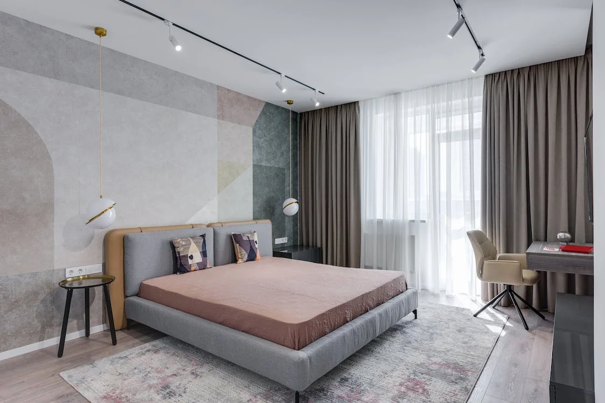
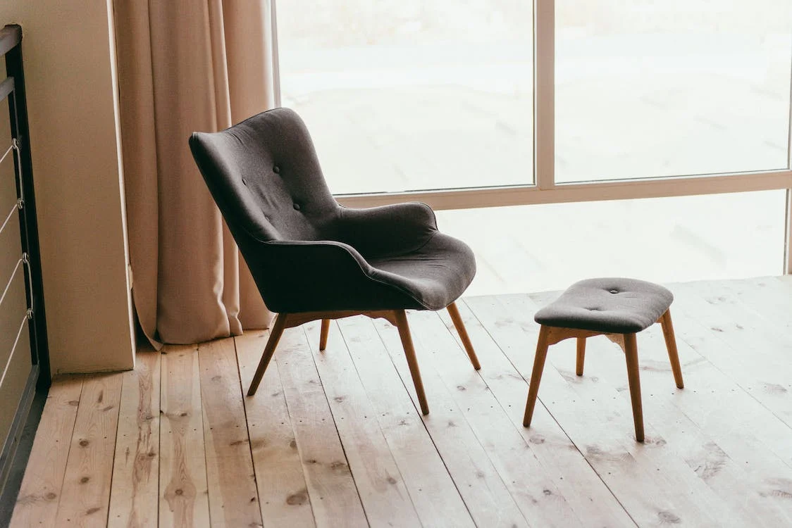
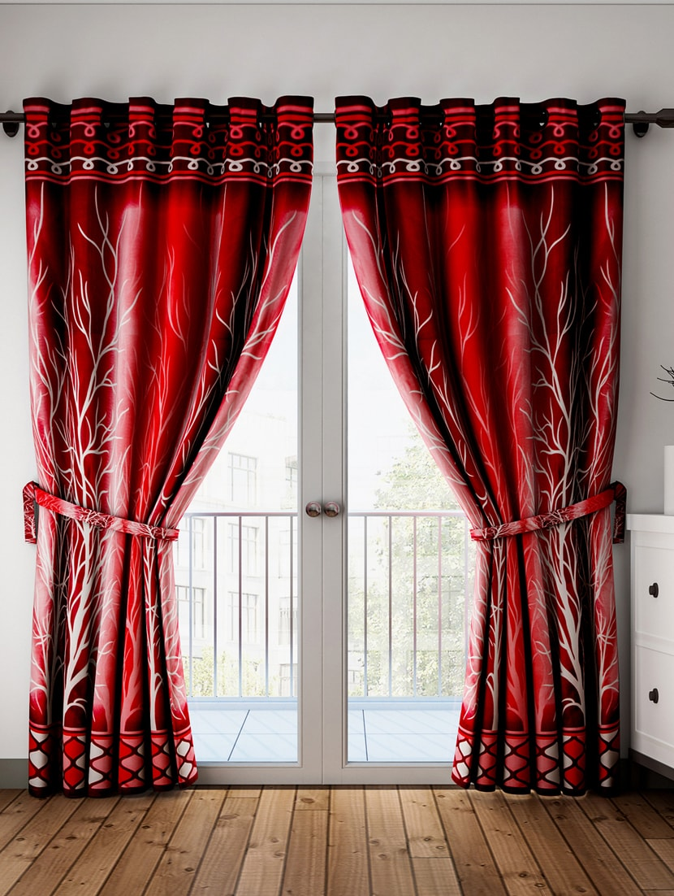

Give us a chance, And your walls will be astoinishing

Mattress
Complete quality for comfort sleep

Chairs
Smart look, Elegant style
Curtains
beautiful texture, eye catchy shades
Sofa Sets
Recliner Sofa
A recliner sofa is a type of sofa that features one or more seats with a built-in
mechanism allowing the user to recline the backrest and often raise the footrest as well. Here are
some key details about recliner sofas:
Recliner sofas typically have a lever or button mechanism that enables the user to adjust the
position of the backrest and footrest.
Some recliner sofas may come with additional features like built-in cup holders, USB charging
ports, massage functions, or heating elements for added comfort and convenience.
Recliner sofas can vary widely in price depending on factors such as brand, materials, features,
and size. There are options available at various price points to accommodate different budgets
Recliner sofas typically have a lever or button mechanism that enables the user to adjust the
position of the backrest and footrest.
Some recliner sofas may come with additional features like built-in cup holders, USB charging
ports, massage functions, or heating elements for added comfort and convenience.
Recliner sofas can vary widely in price depending on factors such as brand, materials, features,
and size. There are options available at various price points to accommodate different budgets
Jumbo Sofa
A "jumbo sofa" typically refers to an oversized or extra-large sofa that offers
ample seating space and comfort. Here are some key details about jumbo sofas:
Due to their larger size, jumbo sofas often provide enhanced comfort with deeper seats, plush
cushions, and ample space to relax.
Jumbo sofas come in various designs and styles to suit different preferences and interior decor
themes. They can range from contemporary to traditional, with options available in different
upholstery materials, colors, and patterns.
Like any piece of furniture, jumbo sofas require regular maintenance and care to keep them
looking their best. This may include vacuuming upholstery, spot cleaning stains, and rotating
cushions to ensure even wear.
Due to their larger size, jumbo sofas often provide enhanced comfort with deeper seats, plush
cushions, and ample space to relax.
Jumbo sofas come in various designs and styles to suit different preferences and interior decor
themes. They can range from contemporary to traditional, with options available in different
upholstery materials, colors, and patterns.
Like any piece of furniture, jumbo sofas require regular maintenance and care to keep them
looking their best. This may include vacuuming upholstery, spot cleaning stains, and rotating
cushions to ensure even wear.
Sofa Cum Bed
A sofa cum bed, also known as a sofa bed or sleeper sofa, is a versatile piece of
furniture that serves dual purposes as both a sofa and a bed. Here are some key details about sofa
cum beds:
A sofa cum bed typically features a convertible design, allowing it to transition between a sofa
for seating during the day and a bed for sleeping at night. The transformation process may
involve unfolding or pulling out a hidden mattress from within the sofa frame.
Like any piece of furniture, sofa cum beds require regular maintenance to keep them clean and in
good condition. This may involve vacuuming upholstery, spot cleaning stains, and occasionally
flipping or rotating the mattress to ensure even wear.
A sofa cum bed typically features a convertible design, allowing it to transition between a sofa
for seating during the day and a bed for sleeping at night. The transformation process may
involve unfolding or pulling out a hidden mattress from within the sofa frame.
Like any piece of furniture, sofa cum beds require regular maintenance to keep them clean and in
good condition. This may involve vacuuming upholstery, spot cleaning stains, and occasionally
flipping or rotating the mattress to ensure even wear.
L Type Sofa
An "L-shaped sofa," also known as a sectional sofa or corner sofa, is a type of
seating furniture that is shaped like the letter "L" when viewed from above. Here are some key
details about L-shaped sofas:
L-shaped sofas are popular choices for maximizing seating in rooms with limited space or
irregular layouts. They can fit snugly into corners or against walls, making efficient use of
available space.
L-shaped sofas are versatile pieces of furniture suitable for living rooms, family rooms,
entertainment areas, or even offices. They provide ample seating space for relaxing,
socializing, and entertaining guests
Overall, an L-shaped sofa is a practical and stylish seating solution that offers flexibility,
comfort, and space utilization
L-shaped sofas are popular choices for maximizing seating in rooms with limited space or
irregular layouts. They can fit snugly into corners or against walls, making efficient use of
available space.
L-shaped sofas are versatile pieces of furniture suitable for living rooms, family rooms,
entertainment areas, or even offices. They provide ample seating space for relaxing,
socializing, and entertaining guests
Overall, an L-shaped sofa is a practical and stylish seating solution that offers flexibility,
comfort, and space utilization
Wallpapers
Wallpapers
Wallpaper is used in interior decoration to cover the interior walls of domestic
and public buildings. It is usually sold in rolls and is applied onto a wall using wallpaper paste
Geometric wallpaper designs feature patterns and shapes inspired by mathematical concepts,
creating visually striking arrangements with symmetrical elements. Available in a wide range of
colors and patterns, geometric wallpaper adds a modern touch to any interior space.
Floral wallpaper features designs inspired by nature, incorporating motifs such as flowers,
leaves, and vines to create a charming and timeless aesthetic. Available in a myriad of colors
and styles, floral wallpaper can range from delicate and romantic to bold and vibrant,
Customized wallpaper allows individuals to create unique and personalized wall coverings
tailored to their preferences and style. Whether using personal photographs, artwork, or
specific designs, customized wallpaper offers endless possibilities for creating one-of-a-kind
spaces. With advancements in digital printing technology
Geometric wallpaper designs feature patterns and shapes inspired by mathematical concepts,
creating visually striking arrangements with symmetrical elements. Available in a wide range of
colors and patterns, geometric wallpaper adds a modern touch to any interior space.
Floral wallpaper features designs inspired by nature, incorporating motifs such as flowers,
leaves, and vines to create a charming and timeless aesthetic. Available in a myriad of colors
and styles, floral wallpaper can range from delicate and romantic to bold and vibrant,
Customized wallpaper allows individuals to create unique and personalized wall coverings
tailored to their preferences and style. Whether using personal photographs, artwork, or
specific designs, customized wallpaper offers endless possibilities for creating one-of-a-kind
spaces. With advancements in digital printing technology
Sleeping Mattress
Eco Mattress
An eco-friendly mattress, also known as a green mattress or eco mattress, is a type
of mattress that is designed and manufactured with a focus on sustainability and environmental
responsibility. Here are some key details about eco mattresses:
Eco mattresses are typically made from natural, organic, or recycled materials that have minimal
impact on the environment.
Despite their eco-friendly materials, eco mattresses are designed to be durable and
long-lasting, providing years of comfortable sleep. High-quality materials and construction
techniques contribute to the mattress's resilience and longevity.
Eco mattresses offer a range of comfort options to suit different preferences, including varying
levels of firmness and support.
Eco mattresses are typically made from natural, organic, or recycled materials that have minimal
impact on the environment.
Despite their eco-friendly materials, eco mattresses are designed to be durable and
long-lasting, providing years of comfortable sleep. High-quality materials and construction
techniques contribute to the mattress's resilience and longevity.
Eco mattresses offer a range of comfort options to suit different preferences, including varying
levels of firmness and support
Ortho Mattress
An orthopedic mattress, commonly referred to as an ortho mattress, is a type of
mattress specifically designed to provide optimal support and alignment for the spine, joints, and
muscles. Here are some key details about ortho mattresses:
Ortho mattresses are engineered to provide firmer support compared to traditional mattresses.
They aim to maintain the natural curvature of the spine, promoting proper alignment and reducing
pressure points, particularly in areas such as the lower back, hips, and shoulders.
Ortho mattresses are designed to alleviate pressure points by distributing weight evenly across
the surface of the mattress. This helps to reduce discomfort and improve blood circulation,
which can be particularly beneficial for individuals with back pain or joint issues.
By promoting proper spinal alignment and reducing pressure points, ortho mattresses can
contribute to better sleep quality and overall well-being. Many people experience improved
comfort and reduced pain when sleeping on an ortho mattress.
Ortho mattresses are engineered to provide firmer support compared to traditional mattresses.
They aim to maintain the natural curvature of the spine, promoting proper alignment and reducing
pressure points, particularly in areas such as the lower back, hips, and shoulders.
Ortho mattresses are designed to alleviate pressure points by distributing weight evenly across
the surface of the mattress. This helps to reduce discomfort and improve blood circulation,
which can be particularly beneficial for individuals with back pain or joint issues.
By promoting proper spinal alignment and reducing pressure points, ortho mattresses can
contribute to better sleep quality and overall well-being. Many people experience improved
comfort and reduced pain when sleeping on an ortho mattress.
Latex Mattress
A latex mattress is a type of mattress that is primarily made from latex foam,
which is derived from the sap of rubber trees. Here are some key details about latex mattresses:
Latex mattresses are typically made from natural latex, synthetic latex, or a combination of
both. Natural latex is derived from the sap of rubber trees and is known for its durability,
elasticity, and breathability.
Natural latex mattresses are known for their exceptional durability and longevity. They are
resistant to sagging and indentation, maintaining their shape and supportiveness over time.
Synthetic latex mattresses may have a slightly shorter lifespan but still offer good durability
compared to other types of mattresses.
Overall, a latex mattress offers a combination of comfort, support, durability, and
eco-friendliness, making it a popular choice for many sleepers seeking a high-quality sleep
surface.
Latex mattresses are typically made from natural latex, synthetic latex, or a combination of
both. Natural latex is derived from the sap of rubber trees and is known for its durability,
elasticity, and breathability.
Natural latex mattresses are known for their exceptional durability and longevity. They are
resistant to sagging and indentation, maintaining their shape and supportiveness over time.
Synthetic latex mattresses may have a slightly shorter lifespan but still offer good durability
compared to other types of mattresses.
Overall, a latex mattress offers a combination of comfort, support, durability, and
eco-friendliness, making it a popular choice for many sleepers seeking a high-quality sleep
surface.
Memory Foam Mattress
A memory foam mattress is a type of mattress that is made from viscoelastic foam,
which is a high-density polyurethane foam. Here are some key details about memory foam mattresses:
Memory foam mattresses are constructed from viscoelastic foam, which is known for its ability to
contour to the shape of the body in response to heat and pressure. This provides personalized
support and pressure relief,
Memory foam mattresses are praised for their comfort and cushioning properties. The foam molds
to the body's shape, creating a cradling sensation that can alleviate discomfort and promote
relaxation. Many people find memory foam mattresses especially comfortable for side sleeping, as
the foam contours to the hips and shoulders.
Overall, a memory foam mattress offers a combination of personalized support, pressure relief,
and comfort, making it a popular choice for many sleepers seeking a restful night's sleep.
Memory foam mattresses are constructed from viscoelastic foam, which is known for its ability to
contour to the shape of the body in response to heat and pressure. This provides personalized
support and pressure relief,
Memory foam mattresses are praised for their comfort and cushioning properties. The foam molds
to the body's shape, creating a cradling sensation that can alleviate discomfort and promote
relaxation. Many people find memory foam mattresses especially comfortable for side sleeping, as
the foam contours to the hips and shoulders.
Overall, a memory foam mattress offers a combination of personalized support, pressure relief,
and comfort, making it a popular choice for many sleepers seeking a restful night's sleep.
Bonded Mattress
A bonded mattress is a type of mattress construction where layers of foam or other
materials are bonded together using adhesive or other bonding methods. Here are some key details
about bonded mattresses:
Bonded mattresses typically consist of multiple layers of foam, such as polyurethane foam or
memory foam, that are bonded together to form the mattress core. These layers may vary in
thickness and density depending on the desired level of support and comfort.
The durability of a bonded mattress depends on factors such as the quality of the materials
used, the bonding process, and the overall construction. Properly bonded mattresses can be
durable and long-lasting, providing years of comfortable sleep.
Bonded mattresses are often more affordable than mattresses made with other construction
methods, such as coil or latex mattresses. This makes them a popular choice for budget-conscious
consumers who still want a comfortable and supportive mattress.
Bonded mattresses typically consist of multiple layers of foam, such as polyurethane foam or
memory foam, that are bonded together to form the mattress core. These layers may vary in
thickness and density depending on the desired level of support and comfort.
The durability of a bonded mattress depends on factors such as the quality of the materials
used, the bonding process, and the overall construction. Properly bonded mattresses can be
durable and long-lasting, providing years of comfortable sleep.
Bonded mattresses are often more affordable than mattresses made with other construction
methods, such as coil or latex mattresses. This makes them a popular choice for budget-conscious
consumers who still want a comfortable and supportive mattress.
Chairs
Office Chair
Office chairs are specially designed chairs intended for use in office
environments, providing comfort and support for individuals who spend extended periods sitting at a
desk or workstation. Here are some key details about office chairs:
Office chairs are typically designed with ergonomic features to promote proper posture and
reduce the risk of musculoskeletal strain and discomfort. This includes adjustable seat height,
lumbar support, armrests, and tilt mechanisms to accommodate individual preferences and body
types
Office chairs often feature multiple adjustable components to customize the chair to the user's
needs. This includes adjustable seat height, armrest height and width, lumbar support depth and
height, and tilt tension and lock settings. These adjustable features allow users to find the
most comfortable and supportive position for their work tasks.
Office chairs are typically designed with ergonomic features to promote proper posture and
reduce the risk of musculoskeletal strain and discomfort. This includes adjustable seat height,
lumbar support, armrests, and tilt mechanisms to accommodate individual preferences and body
types
Office chairs often feature multiple adjustable components to customize the chair to the user's
needs. This includes adjustable seat height, armrest height and width, lumbar support depth and
height, and tilt tension and lock settings. These adjustable features allow users to find the
most comfortable and supportive position for their work tasks.
Dinning Chair
Dining chairs are essential furniture pieces designed for use around a dining
table. Here are some key details about dining chairs:
Dining chairs are primarily used for seating during meals, providing comfort and support for
diners. They are typically placed around a dining table and are often part of a matching dining
set.
Dining chairs come in different sizes to accommodate various body types and table heights.
Standard dining chairs typically have a seat height of around 18 to 20 inches, but this can vary
depending on the design and intended use.
While dining chairs are primarily used for dining rooms, they can also serve as seating in other
areas of the home, such as kitchens, home offices, or living rooms. Some designs are versatile
enough to complement various interior spaces.
Dining chairs are primarily used for seating during meals, providing comfort and support for
diners. They are typically placed around a dining table and are often part of a matching dining
set.
Dining chairs come in different sizes to accommodate various body types and table heights.
Standard dining chairs typically have a seat height of around 18 to 20 inches, but this can vary
depending on the design and intended use.
While dining chairs are primarily used for dining rooms, they can also serve as seating in other
areas of the home, such as kitchens, home offices, or living rooms. Some designs are versatile
enough to complement various interior spaces.
Curtains

Curtains
Curtains are a type of window treatment that serve both functional and decorative
purposes
Panel Curtains: These are the most common type of curtain, consisting of one or more panels of
fabric that hang vertically from a curtain rod. They can be opened by pulling them to the sides
or closed by pulling them together.
Sheer Curtains: Sheer curtains are made from lightweight, translucent fabrics that allow
diffused light to enter the room while still providing some level of privacy.
Blackout Curtains: These curtains are made from heavy, opaque fabrics designed to block out
light completely. They're often used in bedrooms or home theaters to create a dark environment.
Cafe Curtains: Cafe curtains cover only the bottom half of a window, providing privacy while
still allowing light to enter the room.
Valance: A valance is a decorative piece of fabric that hangs across the top of a window. It's
often used in combination with curtains to add a decorative touch.
Panel Curtains: These are the most common type of curtain, consisting of one or more panels of
fabric that hang vertically from a curtain rod. They can be opened by pulling them to the sides
or closed by pulling them together.
Sheer Curtains: Sheer curtains are made from lightweight, translucent fabrics that allow
diffused light to enter the room while still providing some level of privacy.
Blackout Curtains: These curtains are made from heavy, opaque fabrics designed to block out
light completely. They're often used in bedrooms or home theaters to create a dark environment.
Cafe Curtains: Cafe curtains cover only the bottom half of a window, providing privacy while
still allowing light to enter the room.
Valance: A valance is a decorative piece of fabric that hangs across the top of a window. It's
often used in combination with curtains to add a decorative touch.